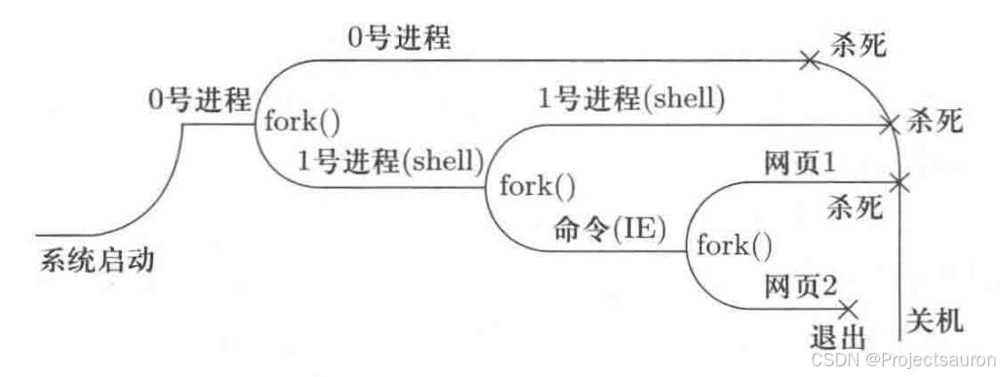
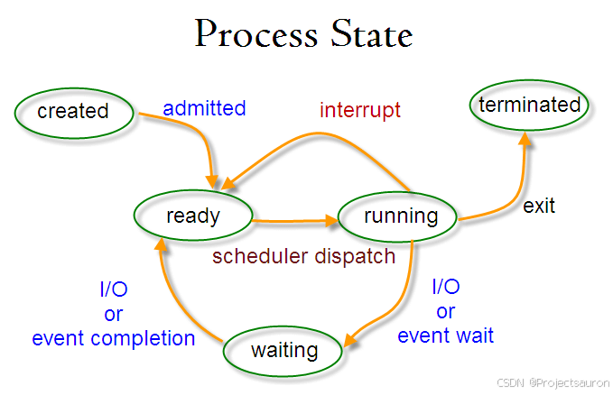
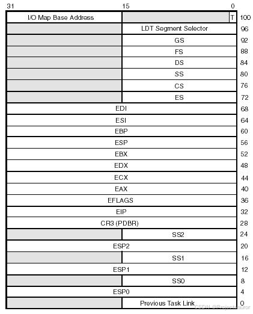

Linux 进程调度（一）之初识进程
[TOC]
一、初识进程
1、基本概念
进程是任何多道程序设计的操作系统中的基本概念。通常把进程定义为程序执行的一个实例，因此，如果 16 个用户同时运行 vi，那么就有 16 个独立的进程（尽管它们共享同一个可执行代码）。在 Linux 源代码中，常把进程称为任务（task）或线程（thread）。
进程类似于人类：它们被产生，有或多或少有效的生命，可以产生一个或多个子进程最终都要死亡。一个微小的差异是进程之间没有性别差异——每个进程都只有一个父亲。
从内核观点看，进程的目的就是担当分配系统资源（CPU 时间、内存等）的实体。
2、进程描述符
为了管理进程，内核必须对每个进程所做的事情进行清楚的描述。例如，内核必须知道进程的优先级，它是正在 CPU 上运行还是因某些事件而被阻塞，给它分配了什么样的地址空间，允许它访问哪个文件等等。这正是进程描述符（process descriptor）的作用——进程描述符都是 task_struct 类型结构，它的字段包含了与一个进程相关的所有信息。如下就是 task_struct 的结构，定义在目录 include/linux/sched.h 中：
1 | struct task_struct { |
主要就是包含如下内容：
- 标识符：与进程相关的唯一标识符，用来区别其他进程
- 状态：进程会有不同的状态，如运行，停止等等
- 优先级：相对于其他进程的优先顺序
- 程序计数器：程序中即将执行的下一条指令的地址
- 内存指针：包括程序代码和进程相关数据的指针
- 上下文信息：进程执行时 CPU 的寄存器中的数据
- IO状态信息： 包括显示的 I/O 请求，分配给进程的 I/O 设备和正在被进程使用的文件列表。
- 记账信息：可能包括处理器时间总和，使用的时钟总数，时间限制，记账号等
3、标识一个进程
一般来说，能被独立调度的每个执行上下文都必须拥有它自己的进程描述符；因此，即使共享内核大部分数据结构的轻量级进程，也有它们自己的 task_struct 结构。
类 Unix 操作系统允许用户使用一个叫做进程标识符 processID（或 PID）的数来标识进程，PID 存放在进程描述符的 pid 字段中。PID 被顺序编号，新创建进程的 PID 通常是前一个进程的 PID 加 1。不过，PID 的值有一个上限，当内核使用的 PID 达到这个上限值的时候就必须开始循环使用已闲置的小 PID 号。在缺省情况下，最大的 PID 号是 32767（PID_MAX_DEFAULT-1）；系统管理员可以通过向 /proc/sys/kernel/pid_max 这个文件中写入一个更小的值来减小 PID 的上限值，使 PID 的上限小于 32767。在 64 位体系结构中，系统管理员可以把 PID 的上限扩大到 4194303。
程序通过它的 PID 和它父进程的进程 ID（PPID）识别，因此进程可以被分类为：
- 父进程 - 这些是在运行时创建其它进程的进程。
- 子进程 - 这些是在运行时由其它进程创建的进程。
4、进程 0
所有进程的祖先叫做进程 0，idle 进程或因为历史的原因叫做 swapper 进程，它是在 Linux 的初始化阶段从无到有创建的一个内核线程。这个祖先进程使用下列静态分配的数据结构（所有其他进程的数据结构都是动态分配的）
随后，进程 0 又创建另一个叫进程 1 的内核线程（一般叫做 init 进程）。init 进程执行 shell 程序；接下来 shell 会调用 fork() 来创建一个进程，去执行用户输入命令对应的程序；用户程序可以通过 fork() 创建出新进程来执行相应的任务。上层应用所做的每一件事，如编译一个 c 文件、浏览一个网页、发一封邮件等，都要在操作系统中创建一个进程来完成。

二、进程状态
1、进程状态
顾名思义，进程描述符中的 state 字段描述了进程当前所处的状态。它由一组标志组成其中每个标志描述一种可能的进程状态。在当前的 Linux 版本中，这些状态是互斥的，因此，严格意义上说，只能设置一种状态，其余的标志将被清除。下面是进程可能的状态：
- 可运行状态（TASK_RUNNING）
- 进程要么在CPU上执行，要么准备执行。
- 可中断的等待状态（TASK_INTERRUPTIBLE）
- 进程被挂起(睡眠)，直到某个条件变为真。产生一个硬件中断，释放进程正等待的系统资源，或传递一个信号都是可以唤醒进程的条件（把进程的状态放回到
TASK RUNNING）。
- 进程被挂起(睡眠)，直到某个条件变为真。产生一个硬件中断，释放进程正等待的系统资源，或传递一个信号都是可以唤醒进程的条件（把进程的状态放回到
- 不可中断的等待状态（TASK_UNINTERRUPTIBLE）
- 与可中断的等待状态类似，但有一个例外，把信号传递到睡眠进程不能改变它的状态。这种状态很少用到，但在一些特定的情况下（进程必须等待，直到一个不能被中断的事件发生），这种状态是很有用的。例如，当进程打开一个设备文件，其相应的设备驱动程序开始探测相应的硬件设备时会用到这种状态。探测完成以前，设备驱动程序不能被中断，否则，硬件设备会处于不可预知的状态。
- 暂停状态（TASK_STOPPED）
- 进程的执行被暂停。当进程接收到
SIGSTOP、SIGTSTP、SIGTTIN或SIGTTOU信号后，进入暂停状态。
- 进程的执行被暂停。当进程接收到
- 跟踪状态（TASK_TRACED）
- 进程的执行已由 debugger 程序暂停。当一个进程被另一个进程监控时（例如 debugger 执行
ptrace()系统调用监控一个测试程序），任何信号都可以把这个进程置于TASK_TRACED状态。
- 进程的执行已由 debugger 程序暂停。当一个进程被另一个进程监控时（例如 debugger 执行
而这些状态在内核源码中是这样定义的：
1 | static const char * const task_state_array[] = { |
下图为各个进程状态之间的关系：

完整的进程状态 stat 定义在 include/linux/sched.h：

通过 ps 命令可以查看进程的状态：
1 | $ ps -e -o pid,state,command |
其中 ps 输出的状态含义如下：
- R：
可运行状态：此时进程正在运行或者正在运行队列中等待准备运行 - S：
可中断的等待状态：处于可中断的等待状态的进程可以被某一信号中断 - D：
不可中断的等待状态：处于不可中断的等待状态的进程不受信号的打扰，将一直等待事件的发生或等待某种系统资源 - T：
暂停状态：处于暂停状态的进程被暂停运行 - Z：
僵死状态：每个进程在运行结束后都会处于僵死状态，等待父进程调用进而释放系统资源，处于该状态的进程已经运行结束，但是它的父进程还没有释放其系统资源 - **<**：高优先级进程
- N：低优先级进程
- L：有些页面被锁在内存中
- s：主进程(回话的先导进程)
- l：多线程进程
- **+**：前台线程
此外两个进程状态是既可以存放在进程描述符的 state 字段中，也可以存放在 exit_state 字段中。不过，只有当进程的执行被终止时，进程的状态才会变为这两种状态中的一种：
- 僵死状态（EXIT_ZOMBIE）
- 进程的执行被终止，但是，父进程还没有发布
wait4()或waitpid()系统调用来返回有关死亡进程的信息。发布wait()类系统调用前，内核不能丢弃。包含在死进程描述符中的数据，因为父进程可能还需要它。
- 进程的执行被终止，但是，父进程还没有发布
- 僵死撤消状态（EXIT_DEAD）
- 最终状态：由于父进程刚发出
wait4()或waitpid()系统调用，因而进程由系统删除。为了防止其他执行线程在同一个进程上也执行wait()类系统调用（这是种竞争条件），而把进程的状态由僵死状态改为僵死撤消状态。
- 最终状态：由于父进程刚发出
2、僵尸进程
僵尸进程是指在操作系统中已经结束运行的进程，但它的父进程尚未通过调用 wait() 系统调用来获取其终止状态的进程。当一个进程终止时，操作系统会将其相关信息保留在系统中，直到父进程使用 wait() 系统调用来获取该进程的终止状态。如果父进程没有主动调用 wait() 系统调用，那么终止的子进程就会成为僵尸进程。
僵尸进程不占用系统资源，但如果大量的僵尸进程积累，可能会导致系统进程表满，影响系统运行。因此，及时清理僵尸进程是非常重要的。操作系统会自动处理僵尸进程，但如果父进程长时间不处理，可以通过重新编写父进程的代码，在合适的时机调用 wait() 来清理僵尸进程。
3、孤儿进程
孤儿进程是指在操作系统中，其父进程已经终止或者提前终止，但孤儿进程仍然在运行的进程。当父进程终止时，操作系统会将孤儿进程交给 init 进程来接管。init 进程会通过调用 wait() 系统调用来处理孤儿进程，即获取其终止状态。
与僵尸进程不同，孤儿进程仍然在运行，并不会造成资源浪费问题。操作系统会正常对孤儿进程进行处理，确保其终止并释放相关资源。因此，孤儿进程并不需要额外的处理，操作系统会自动处理孤儿进程的终止。
三、进程切换
为了控制进程的执行，内核必须有能力挂起正在 CPU 上运行的进程，并恢复以前挂起的某个进程的执行。这种行为被称为进程切换（process switch）、任务切换（task switch）或上下文切换（context switch）。
1、硬件上下文
尽管每个进程可以拥有属于自己的地址空间，但所有进程必须共享 CPU 寄存器。因此，在恢复一个进程的执行之前，内核必须确保每个寄存器装入了挂起进程时的值。
进程恢复执行前必须装入寄存器的一组数据称为硬件上下文（hardware context）。硬件上下文是进程可执行上下文的一个子集，因为可执行上下文包含进程执行时需要的所有信息。在 Linux 中，进程硬件上下文的一部分存放在 TSS 段，而剩余部分存放在内核态堆栈中。
在下面的描述中，我们假定用 prev 局部变量表示切换出的进程的描述符，next 表示切换进的进程的描述符。因此，我们把进程切换定义为这样的行为：保存 prev 硬件上下文，用 next 硬件上下文代替 prev。因为进程切换经常发生，因此减少保存和装入硬件上下文所花费的时间是非常重要的。
2、任务状态段
80x86 体系结构包括了一个特殊的段类型，叫任务状态段（TaskState Segment，TSS）来存放硬件上下文。尽管 Linux 并不使用硬件上下文切换，但是强制它为系统中每个不同的 CPU 创建一个 TSS。这样做的两个主要理由为：
- 当 80x86 的一个 CPU 从用户态切换到内核态时，它就从 TSS 中获取内核态堆栈的地址。
- 当用户态进程试图通过
in或out指令访问一个 I/O 端口时，CPU 需要访问存放在 TSS 中的 I/O 许可权位图（Permission Bitmap）以检査该进程是否有访问端口的权力。
下图为 TSS 的结构：

| 组成 | 作用 |
|---|---|
| 0：任务链接域 | 前一个任务的TSS描述符的GDT选择子 |
| SS0，SS1，SS2 ESP0，ESP1，ESP2 |
分别是0，1，2特权级的栈段选择子和对应栈段的栈顶指针； 该部分应由任务创建者填写，且属于一般不变的静态部分，用于当通过门进行特权级转移时切换的栈 |
| 28：CR3 | 分页相关 |
| 32~92部分 | 处理器各寄存器快照，用于任务切换时，保存状态以便将来恢复现场； 多任务环境中，每创建一个任务，OS至少要填写 EIP,EFLAGS,ESP,CS,SS,DS,ES,FS,GS，当该任务第一次执行时，处理器从这加载初试环境，并从CS:EIP处开始执行，从此运行期间由固件更改； |
| 96：LDT段选择子 | 即当前任务的LDT描述符的GDT选择子； |
| 100：T | 用于软件调试，在多任务环境中，若为1，每次切换到该任务引发一次调试异常中断； |
| I/0映射起始地址 | 用于决定当前任务是否可以访问特定硬件端口，填TSS段界限(103)即代表不用； |
tss_struct 结构描述 TSS 的格式。正如Linux 内存管理（二）之GDT与LDT所提到的，init_tss 数组为系统上每个不同的 CPU 存放一个 TSS。在每次进程切换时，内核都更新 TSS 的某些字段以便相应的 CPU 控制单元可以安全地检索到它需要的信息。因此，TSS 反映了 CPU 上的当前进程的特权级，但不必为没有在运行的进程保留 TSS。
每个 TSS 有它自己 8 字节的任务状态段描述符（Task State Segment Descriptor，TSSD）这个描述符包括指向 TSS 起始地址的 32 位 Base 字段，20 位 Limit 字段。TSSD 的 S 标志位被清 0，以表示相应的 TSS 是系统段的事实。
段描述符的内容可以参考 Linux 内存管理（一）之分段机制。